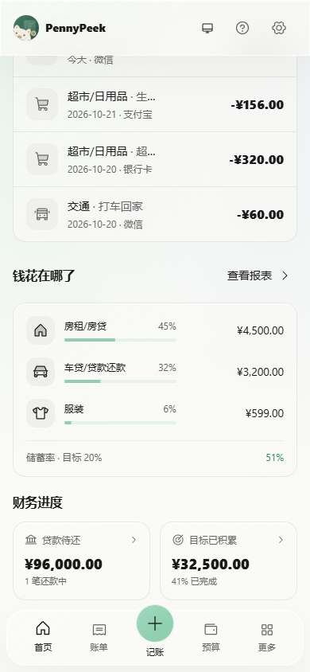

2026-10-22 · 本地实现与截图
先看预算和最近记录，再看分析
移动端首页围绕日常记账重新安排信息：月份选择 → 预算剩余与收支 → 最近四笔记录 → 主要支出分类 → 贷款与目标进度。
页眉保留主题、向导与设置；快速记账集中在底部。桌面继续展示完整图表和财务评分。
金额不再被拆成两行收入、支出并列，结余独占一行；金额按可用空间调整字号，保留完整数值与币种。大额港币数据也经过检查。
先回答“还剩多少”明确显示预算余额，不将其表述为账户余额；超支显示实际超支金额。日均参考只在当前月份有预算余额时出现。
少翻页，容易回顾最近记录排在图表前；移动端用三项主要支出替代大面积图表。预算预警可直接进入预算页面。
继续下滑后的内容
主要支出与财务进度
数据与交互验证
在 320、390、430、768、1440px 及深色模式下检查金额单行、无横向溢出、快速记账取消、月份筛选与账本未被改写。另用独立内存数据验证空账本、超支、暂无收入与大额港币。类型检查与生产构建通过。
切换月份后，汇总、最近记录和支出分类保持同一月份；桌面趋势在查看历史月份时改为该月末七天。贷款收入比排除已结清贷款。
完整检查结果 · 空账本 · 预算超支 · 暂无收入 · 大额港币 · 历史月份
截图中的默认账本为示例数据，边界检查使用虚构记录与内存存储。通过桌面 Edge 模拟视口，未在真实 iOS / Android 设备上检查。